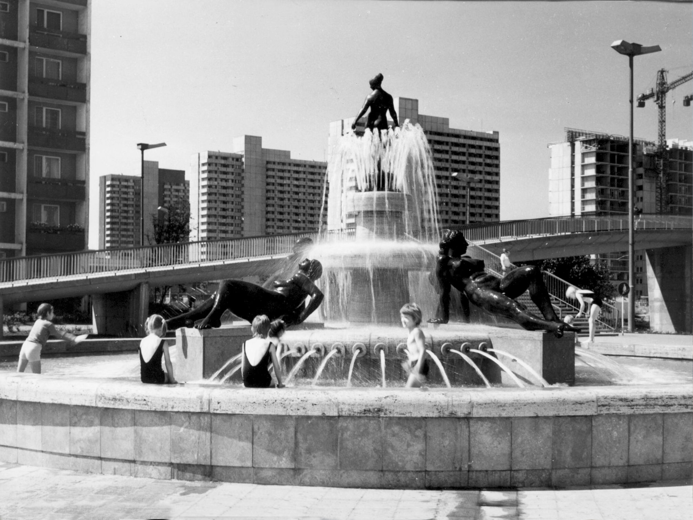

Wissenswertes:
An d. Magistrale 59, 06124 Halle (Saale)
- Errichtung: 1974 zum 10. Jahrestag der Grundsteinlegung von Halle-Neustadt
- Künstler: Gerhard Lichtenfeld (Hallenser Bildhauer)
- Stil: Italienische Renaissance
- Material: Travertinbecken mit Bronze-Figuren
- Durchmesser: ca. 10 Meter
- Restaurierung: 1999 umfassend renoviert (da wurde die kleine Bronzefigur wahrscheinlich gedreht)
- Symbol für die Kunst im öffentlichen Raum von Halle-Neustadt
- Beispiel für realistische Plastik der DDR
Barfuß plantschen am Frauenbrunnen?
Lieber nicht!
Für Regina ist der Frauenbrunnen ein besonderes Kunstwerk – nicht nur wegen seiner Geschichte, sondern auch wegen der Erinnerungen, die sie mit ihm verbindet. „Er wurde Anfang der 70er Jahre von dem Künstler Lichtenfeld entworfen, der nur noch einen Arm hatte. Eigentlich heißt er Frauenbrunnen, aber viele nennen ihn bis heute Lichtensteinbrunnen.“
Vor allem in den 90er Jahren war der Brunnen an heißen Tagen ein Magnet für die Jüngsten. Auch Reginas Sohn liebte es, dort zu spielen.
Auch die Kleidung der ersten Kinder von Halle Neustadt musste einiges mitmachen, lässt mich Regina wissen: “Unser Junge hatte so eine Knickerbocker-Lederhose. Und da haben sie an der Magistrale gebaut hier. Der kam wieder die Lederhose voller Schlamm. Die konnten wir hinstellen”
„Wir haben immer gesagt, unser Junge, der geht da nicht baden."
Doch wie es bei Kindern oft so ist, ließ er sich irgendwann doch von den anderen mitreißen.“
Ein harmloses Spiel endete eines Tages mit einer schmerzhaften Lektion. „Er zog sich dabei einen Splitter ein. Doch es war kein gewöhnlicher Holzsplitter, sondern ein scharfkantiger Glassplitter, der sich tief in seine Haut gebohrt hatte.“ Zunächst schien die Verletzung nicht weiter schlimm, doch wenige Tage später, als die Familie im Urlaub in Neustadt am Rennsteig war, wurde klar, dass die Sache ernster war. „Während die Kinder dort spielten, bemerkten wir, dass sich die Verletzung unseres Sohnes verschlimmerte. Eine feine rote Linie zog sich bereits von der Wunde nach oben – ein Zeichen für eine beginnende Blutvergiftung.“
Dann hatte die Familie Glück im Unglück. „Der Vater eines der Kinder war Chirurg. Als er sich die Wunde ansah, sagte er geschockt: ‚Das eitert ja schon, das muss sofort raus!‘ Dann nahm er eine große Nadel, glühte sie aus und entfernte den Glassplitter.“ Es war ein schmerzhafter Moment, doch am Ende verlief alles gut.